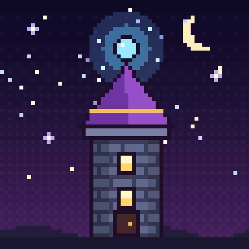

Wizard Tower
Sube piso a piso una torre infestada de monstruos. Derrota al guardián cada 10 pisos para pasar de aprendiz del 1.er círculo a archimago del 10.º círculo, y barre hordas interminables con hechizos que evolucionan a medida que los mejoras en este RPG idle de pixel art.


Características
- De aprendiz a archimagoDerrota al guardián que bloquea el paso cada 10 pisos para subir tu círculo de mago; cada círculo desbloquea hechizos nuevos. Cada 10 pisos, los muros de la torre cambian de color y de forma, con un anillo de luz estelar la primera vez que llegas. Fuego, hielo, rayo y arcano, además de viento, tierra, luz y oscuridad que despiertan en cada dimensión: 25 hechizos en total.
- Hechizos que evolucionan y se combinanAl subir de nivel, una bola de fuego se convierte en explosión ígnea y, al final, en lluvia de meteoritos. Mejora dos elementos para descubrir combinaciones como Explosión de vapor, Rayo de plasma o Fuego infernal, y elige ramas para crear tu propia build.
- Hordas de monstruosPortaescudos, sacerdotes sanadores, fantasmas, ogros gigantes y monstruos de élite. Cada 5 pisos aguarda un guardián, cada 10 llega una horda y cada monstruo derrotado suelta una lluvia de oro.
- Sube, asciende y repiteHaz crecer tu torre con salas selladas y 9 investigaciones por tiempo y, al llegar a la Escalera estelar, asciende y desafía la torre de una nueva dimensión. El oro se sigue acumulando mientras no juegas (al volver, abre el cofre de luz estelar o mira un anuncio para recibir el doble) y la investigación avanza aunque cierres el juego.
- Expediciones y carreras de monstruosDesde el 2.º círculo, envía familiares en expediciones de 1, 4 u 8 horas a los pisos que has alcanzado y vuelven con oro y cristales de maná, a veces con un mapa raro. Desde el 3.er círculo, cada 30 minutos hay una carrera de monstruos: anima gratis al monstruo que creas que ganará, gana oro si aciertas y, si aciertas seguido, la recompensa crece.
Únete a la prueba cerrada de Android Google Play
Wizard Tower está en prueba cerrada en Google Play. Cualquiera puede unirse en cuatro pasos:
- Únete al grupo de testersInicia sesión con la cuenta de Google que usas en Play Store, abre el grupo de Google Starlit Camp Testers y pulsa Unirse al grupo.
- Apúntate a la pruebaAbre el enlace de la prueba y pulsa Convertirse en tester. Justo después de unirte al grupo, puede tardar unos minutos en activarse.
- Instala desde Google PlayCuando te hayas apuntado, instala el juego desde su página de Google Play. También puedes buscarlo en la app Play Store de tu móvil.
- Consérvalo 14 días y envíanos tu opiniónPara poder publicar el juego, los testers deben mantener la app instalada al menos 14 días. Juega de vez en cuando y envíanos errores o ideas por correo o mediante los comentarios privados de Play Store. Nos ayuda muchísimo.
※ Es una prueba de Google Play, así que necesitas un dispositivo Android. Usa la misma cuenta de Google para unirte al grupo, apuntarte a la prueba e instalar el juego. El contenido y el equilibrio pueden cambiar durante la prueba.
Buscamos testers para Android Google Play
Estamos preparando una prueba cerrada de Wizard Tower antes del lanzamiento. Únete ya al grupo de testers y podrás participar en cuanto se abra la prueba.
- Únete al grupo de testersInicia sesión con la cuenta de Google que usas en Play Store, abre el grupo de Google Starlit Camp Testers y pulsa Unirse al grupo.
- Espera a que se abra la pruebaCuando se abra, el enlace de la prueba y los pasos de instalación aparecerán en esta página, y también lo anunciaremos en el grupo.
- Consérvalo 14 días y envíanos tu opiniónCuando se abra, instala el juego, consérvalo al menos 14 días, juega y cuéntanos qué te parece.
※ Es una prueba de Google Play, así que necesitas un dispositivo Android. Únete con la cuenta de Google que usas en Play Store.
Juega en Android Google Play
Wizard Tower es gratis en Google Play.
¡Gracias a todas las personas que participaron en la prueba cerrada!
Próximamente en Android Google Play
Estamos preparando el lanzamiento de Wizard Tower. Publicaremos las novedades en esta página.
iPhone y iPad App Store
Estamos preparando la versión de Wizard Tower para iPhone y iPad para lanzarla junto con la de Android. Cuando salga, aparecerá aquí un botón del App Store.
※ Vincula una cuenta de Google o Apple para continuar el mismo progreso entre Android y iPhone/iPad. Las compras se aplican por plataforma.
Únete a la beta para iPhone y iPad TestFlight
Puedes jugar antes que nadie a la versión de Wizard Tower para iPhone y iPad con Apple TestFlight.
- Instala TestFlightInstala la app TestFlight de Apple desde el App Store de tu iPhone o iPad.
- Únete a la betaAbre el enlace público en el mismo dispositivo y pulsa Aceptar y después Instalar.
- Envíanos tu opiniónEnvía comentarios con capturas desde la app TestFlight o escríbenos por correo.
※ Vincula una cuenta de Google o Apple para continuar el mismo progreso entre Android y iPhone/iPad. Las compras se aplican por plataforma.
Juega en iPhone y iPad
Wizard Tower es gratis en el App Store.
※ Vincula una cuenta de Google o Apple para continuar el mismo progreso entre Android y iPhone/iPad. Las compras se aplican por plataforma.
Versión para PC en desarrollo Steam
Wizard Tower está en desarrollo para lanzarse en PC (Steam). Cuando se abra la página de la tienda de Steam, podrás añadirlo a tu lista de deseados desde aquí.
Añádelo a tu lista de deseados
Ya está abierta la página de Wizard Tower en Steam. Añádelo a tu lista de deseados y Steam te avisará cuando se lance.
Demo en Steam
Juega gratis a la demo de Wizard Tower en Steam. Si te gusta, añádelo también a tu lista de deseados.
Soporte
※ Gratis, con anuncios y compras integradas (eliminar anuncios, Premium, Gremio de familiares). Juega al instante sin cuenta o vincula una cuenta de Google o Apple para guardar tu progreso en la nube y seguir en Android o iPhone/iPad. Por ahora, la versión para iOS solo tiene anuncios, sin compras integradas.